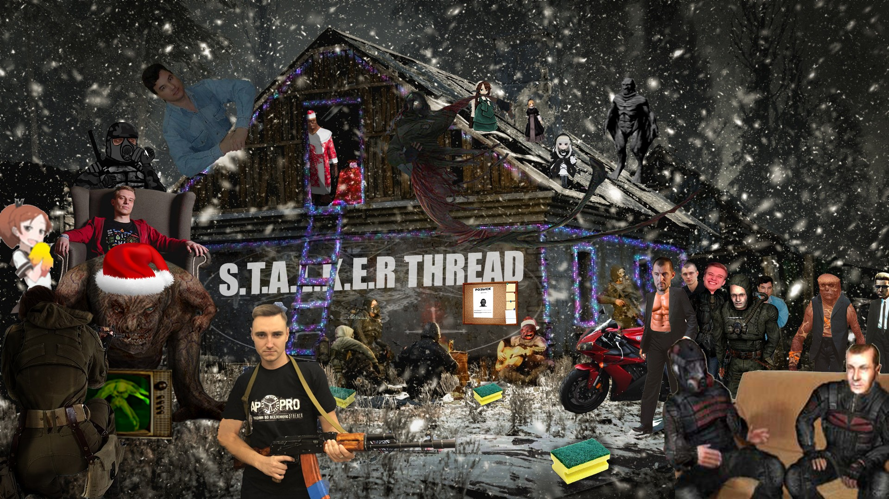

Welcome to S.T.A.L.K.E.R. THREAD!
Здесь ЗОНА братан!
Добро пожаловать в справочный ресурс нашего уютного треда.
Здесь ты найдёшь краткую инфу по модам, по второй части нашей любимой игры и архив тредов, если чувствуешь себя археологом и хочешь копнуть в прошлое
Располагайся по-удобнее, возможно ты здесь надолго.
Предложения по содержимому и замечания по оформлению можете оставить в треде (с пометкой "STALKER THREAD FAQ"), либо на гитхабе: github://stalker-thread.github.io
В следствие необдуманных действий представителей имиджборды 2ch.hk, один из посетелей сталкер-треда организовал конфу в телеграме для всех несогласных и/или пострадавших от действий или бездействий модераторского состава: https://t.me/joinchat/TIQpku57CPh8GM_j
